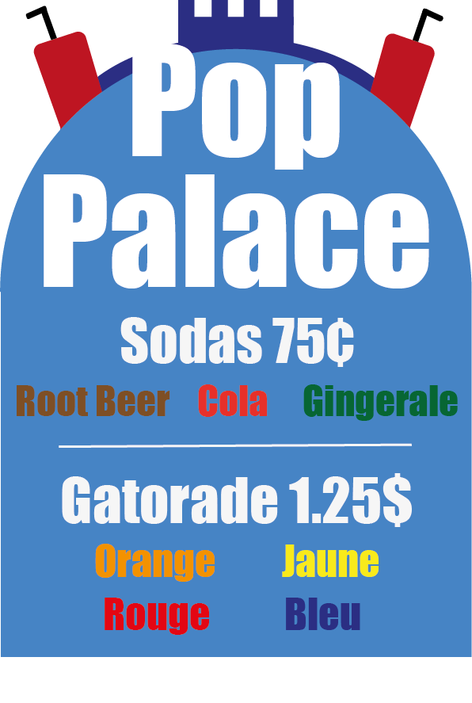

Pop Palace
Pop Palace est la solution pratique pour vos envies de boissonsrafraîchissantes. Nous proposons une large sélection de sodas et de Gatorades pour tous les goûts. Nous offrons un service unique de courses chez Sobeys et DollarTree, à des tarifs compétitifs. Chez Pop Palace, nous offrons à nos clients un service exceptionnel et une expérience de shopping agréable.
Nos Produits
Chez Pop Palace, nous proposons une large gamme de boissons rafraîchissantes à des prix abordables. Nos sodas populaires tels que Coca-Cola, Sprite, 7Up, Dr Pepper et Root Beer ne coûtent que 1 $, tandis que Gatorade est vendu à 1,25 $. Nous aidons nos clients à trouver des produits de qualité à prix compétitifs chez Sobeys et Dollar Tree. Nous sommes déterminés à offrir des produits de qualité à des prix abordables pour satisfaire tous les budgets.Contactez-nous pour plus d'informations sur nos produits et nos tarifs.
Qui sommes nous?
Pop Palace est une entreprise fondée par cinq entrepreneurs passionnés: Joshua Ayers, Ethan McCarthy, Éric Vadnais, Samuel Chagnon et Nicolas Côté. Nous proposons des boissons rafraîchissantes et des produits abordables pour répondre aux besoins de la communauté locale. Avec notre expérience en gestion d'entreprise, marketing et service à la clientèle, nous nous engageons à offrir une expérience de qualité à chaque client. Nous sommes fiers de fournir une attention personnalisée et un service exceptionnel à nos clients, ce qui nous a permis de devenir l'un des détaillants de boissons les plus appréciés de l'école.

Comment nous trouver?
Nous circulons l'école entre les cours et pendant les pauses. Vous n'avez qu'à aller voir Joshua Ayers, Ethan McCarthy, Éric Vadnais, Samuel Chagnon ou Nicolas Côté. Vous pouvez aussi nous contacter à poppalaceecolevoyageur@gmail.com.